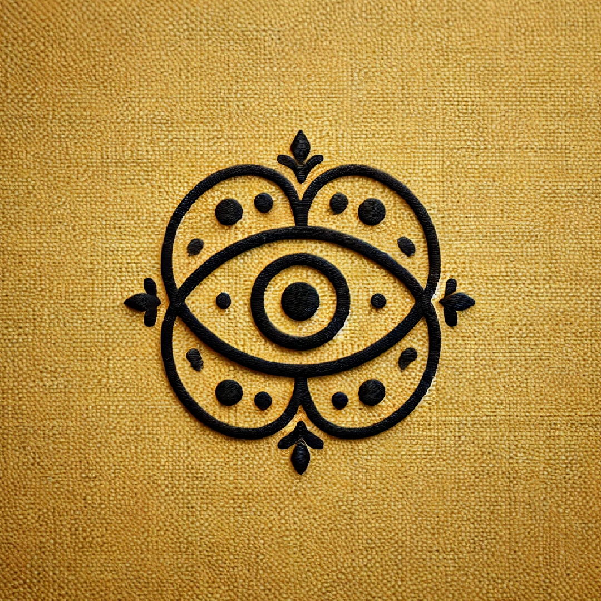
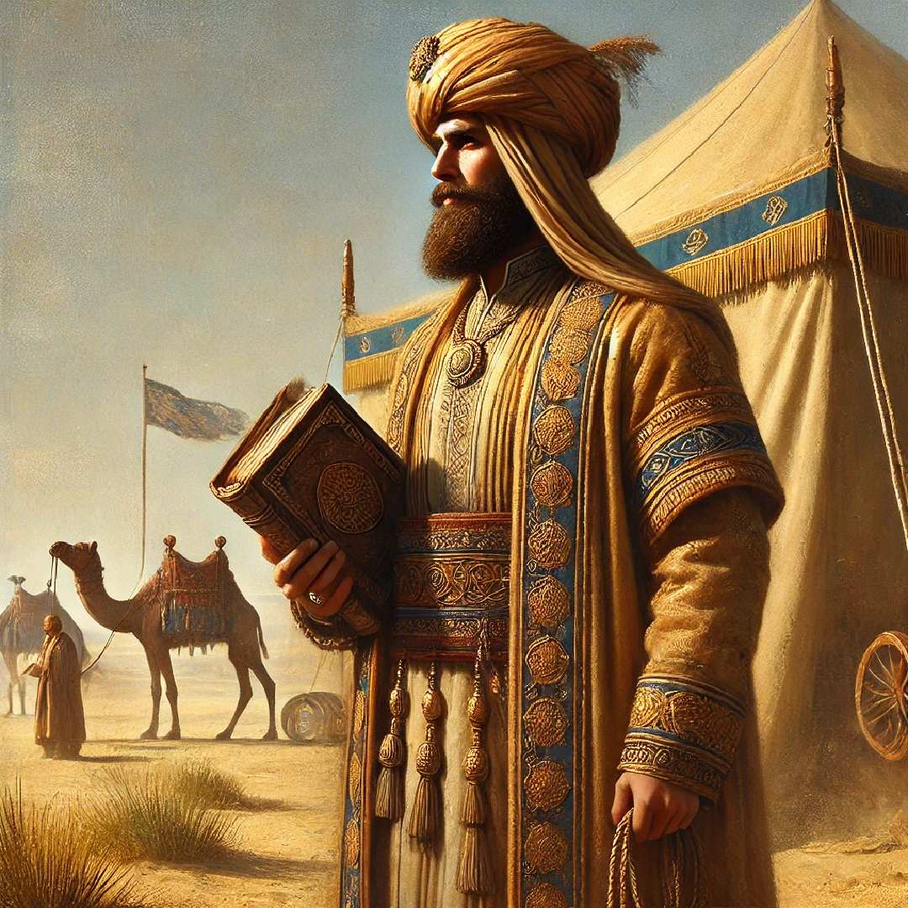
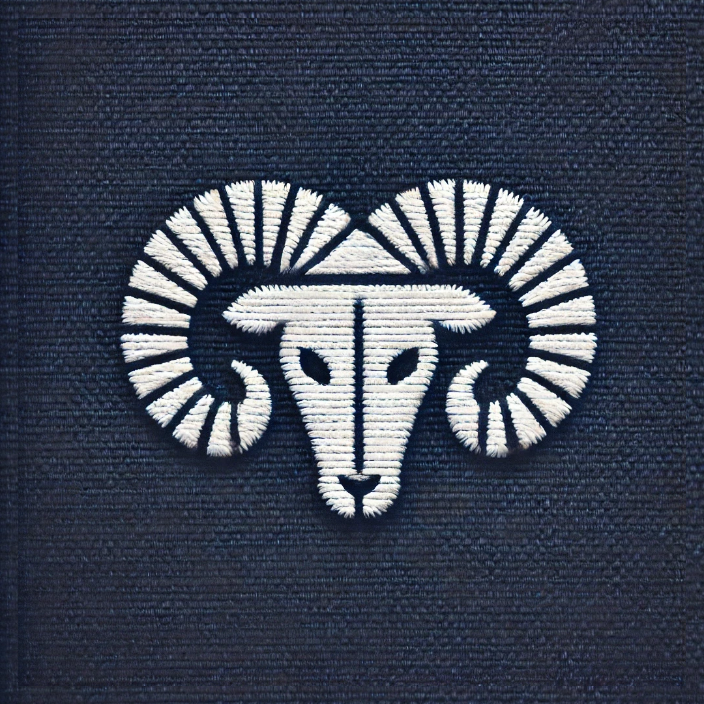
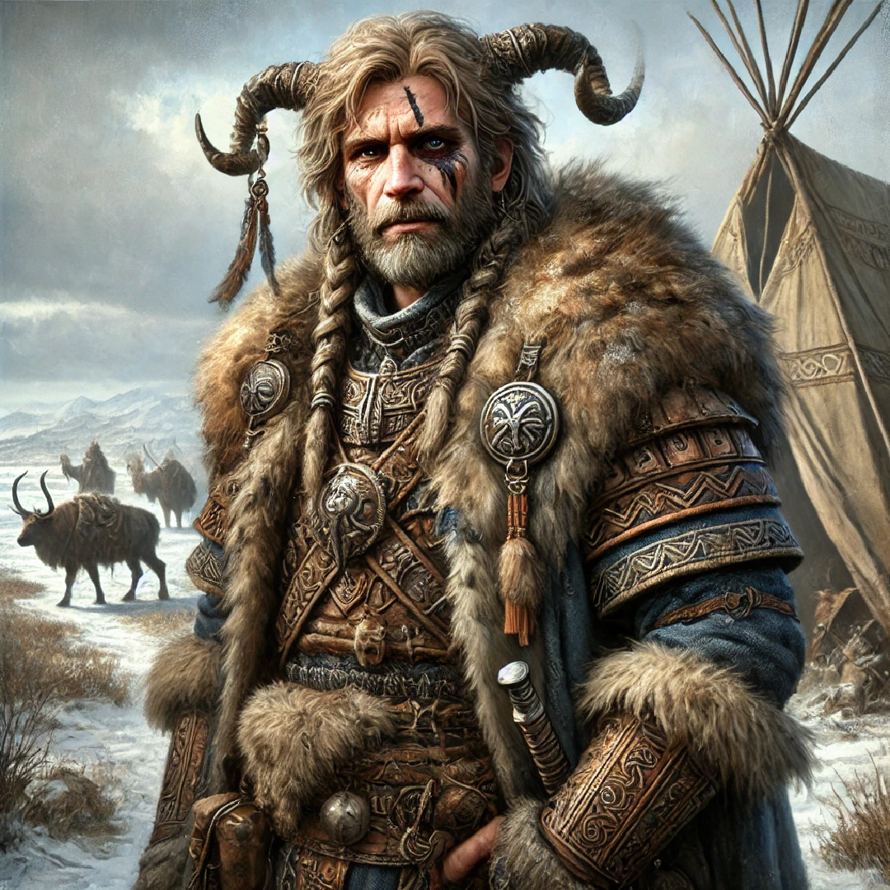

Welcome to the diplomatic nexus of the Isles. Here, envoys from distant lands gather.
A realm of venerable traditions and enigmatic spirituality, Zhi-La thrives amidst its breathtaking landscapes of terraced mountains, serene rivers, and ancient pagodas. The people of Zhi-La live in harmony with the spirits they believe animate all things, from stones to trees. Their intricate rituals and animistic philosophy underpin a society that values balance above all else. The silent warrior-monks of Zhi-La are both scholars and protectors, wielding their mastery of martial arts and mystical disciplines to safeguard their secrets. These secrets include potent alchemical formulas, esoteric magic, and a deep understanding of the natural and supernatural worlds.
| Portrait | Name & Title | Actions |
|---|---|---|
|
Chang Wu Zhilan Envoy |

A land of arid steppes and opulent coastal cities, Xondar is a patchwork of nomadic clans and mercantile powerhouses bound by necessity and ambition. The Xondaran way is one of pragmatic survival, a harsh blend of desert traditions and coastal opportunism. The nomads of the interior live by the cycles of the land, herding livestock and traversing dunes with an almost preternatural sense of direction. Meanwhile, the coastal sultanates revel in decadence and cunning, their leaders adept at balancing trade and diplomacy with ruthless displays of power. Beneath their fine silks and gilded halls lies a culture that respects strength, values gold, and upholds ancient, cryptic rites.
| Portrait | Name & Title | Actions |
|---|---|---|
|
 |
Khalid ibn Al-Sharif Xondaran Trader |

From the frostbitten expanses of the north come the Killian Jarls, lords of a realm where survival is a relentless contest against nature itself. Their power stems from the unbroken bond between rider and steed, hunter and prey, elder and youth. This society prizes freedom above all else, eschewing the rigid hierarchies of southern lands for a way of life guided by shared oaths and ancestral wisdom. When they descend from their windswept ranges, it is with a fury akin to the storms that shape their homeland—swift, unrelenting, and merciless. Despite their fearsome reputation, the Killian Jarls are bound by a deep sense of honor. Their oral histories, sung beneath the constellations of their vast skies, speak of gods who test the worthy and spirits who walk alongside the living. To break an oath or forsake a bond is a crime beyond forgiveness.
| Portrait | Name & Title | Actions |
|---|---|---|
|
 |
Sigrun the Unyielding Killian Theign |
Notices & acknowledgements · Unofficial fan content, not approved or endorsed by Wizards of the Coast. Images belong to their owners.